داشبورد سفارش و مراحل تولید
این داشبورد نشان میدهد هر سفارش کارگاه کجای خط تولید است، کدام مرحله کار را کند کرده، کدام سفارشها از موعد عقب افتادهاند و چه مقدار از پول سفارشها هنوز وصول نشده است.
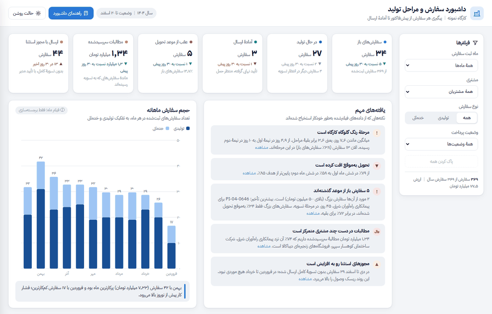
هر سفارش از ثبت پیشفاکتور شروع میشود و تا ده مرحله را به ترتیب طی میکند: برش لیزر، خم، فورج، جوش، تمیزکاری، رنگ، مونتاژ، بستهبندی، تسویه و ارسال. سفارشهای خدماتی (مثلاً فقط برش ورقِ خود مشتری) فقط بخشی از این مراحل را لازم دارند. پس از تسویه یا صدور «مجوز استثنا»، سفارش تأیید نهایی «آمادهٔ ارسال» میگیرد.
دادهها مربوط به سال ۱۴۰۴ است و وضعیتها تا ۲۰ اسفند ۱۴۰۴ محاسبه شدهاند. در مجموع سفارش به ارزش ثبت شده است.
کدام مرحله گلوگاه است و صف کار کجا جمع شده؟
کدام سفارشها از موعدی که به مشتری قول دادهایم عقباند؟
چه مقدار طلب داریم، از چه کسانی، و چند سفارش بدون تسویه ارسال شده؟
شروع سریع
- شاخصها و یافتهها را بخوانید. ردیف کارتهای بالا وضعیت امروز را میگوید و کادر «یافتههای مهم» مهمترین مشکلات را با عدد و نام بیان میکند.
- با فیلترها دامنه را کوچک کنید. مثلاً مشتری «» را انتخاب کنید تا همهٔ نمودارها فقط سفارشهای او را نشان دهند.
- روی سفارشها کلیک کنید. در «فهرست سفارشها» با کلیک روی هر ردیف، تاریخچهٔ کامل مراحل آن سفارش در پنل کناری باز میشود.
نشانگر موس را روی هر میله، نقطه یا ردیف نمودار نگه دارید تا جزئیات آن در یک کادر کوچک نمایش داده شود. در گوشی، روی آن بزنید.
شاخصهای اصلی مشاهده در داشبورد ←
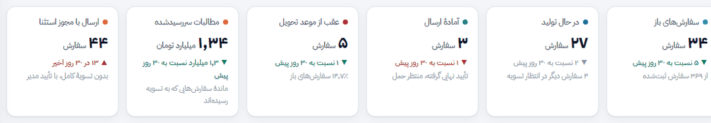
چه چیزی را نشان میدهد؟
- سفارشهای باز: سفارشهایی که هنوز ارسال نشدهاند.
- در حال تولید: سفارشهایی که در یکی از هشت مرحلهٔ تولیدی (برش تا بستهبندی) هستند.
- آمادهٔ ارسال: تأیید نهایی گرفتهاند و فقط منتظر حملاند.
- عقب از موعد تحویل: سفارشهای بازی که تاریخ موعدشان گذشته است.
- مطالبات سررسیدشده: ماندهٔ پول سفارشهایی که به مرحلهٔ تسویه رسیدهاند ولی کامل پرداخت نشدهاند.
- ارسال با مجوز استثنا: تعداد سفارشهایی که بدون تسویهٔ کامل و با تأیید مدیر ارسال شدهاند.
چطور بخوانیم؟
علامت ▲ یعنی عدد نسبت به ۳۰ روز پیش بیشتر شده و ▼ یعنی کمتر. رنگ سبز یعنی تغییر به نفع کارگاه است و قرمز یعنی باید پیگیری شود؛ مثلاً بیشتر شدن «آمادهٔ ارسال» سبز است ولی بیشتر شدن «عقب از موعد» قرمز. برای «در حال تولید» خوب یا بد بودن تغییر روشن نیست، پس خاکستری نمایش داده میشود.
یافتههای مهم مشاهده در داشبورد ←
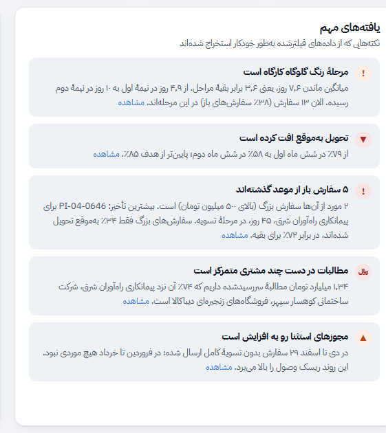
این کادر بهجای شما نمودارها را مرور میکند و حداکثر پنج نکتهٔ مهم را به زبان ساده مینویسد. رنگ نشانهٔ هر نکته شدت آن را نشان میدهد: قرمز برای مشکل جدی، نارنجی برای هشدار و سبز برای خبر خوب. پیوند «مشاهده» شما را به نمودار مربوط میبرد.
حجم سفارش ماهانه مشاهده در داشبورد ←
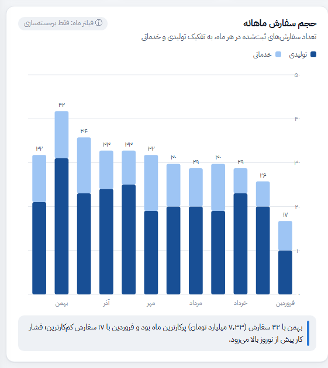
هر ستون یک ماه است و ماهها از راست به چپ (فروردین در سمت راست) چیده شدهاند. ارتفاع کل ستون تعداد سفارشهای ثبتشده در آن ماه است و عدد بالای ستون همین تعداد را نشان میدهد. اگر فیلتر ماه را انتخاب کنید، نمودار همهٔ سال را نگه میدارد و فقط ماه انتخابی را پررنگ میکند تا مقایسه از دست نرود.
سفارشهای باز در هر مرحله مشاهده در داشبورد ←
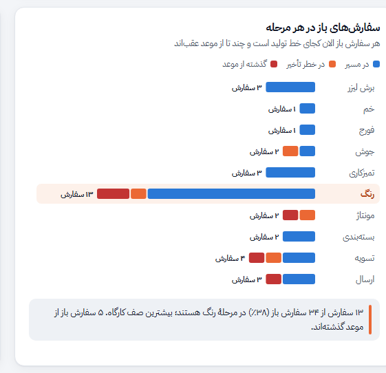
هر ردیف یکی از ده مرحله است و طول میله تعداد سفارشهای بازی است که همین الان در آن مرحلهاند. میله به سه رنگ تقسیم شده: آبی برای سفارشهای «در مسیر»، نارنجی برای «در خطر تأخیر» و قرمز برای «گذشته از موعد». ردیفی که پسزمینهٔ کرمرنگ دارد مرحلهٔ گلوگاه است (بر اساس نمودار بعدی).
میانگین روزهای ماندن در هر مرحله مشاهده در داشبورد ←
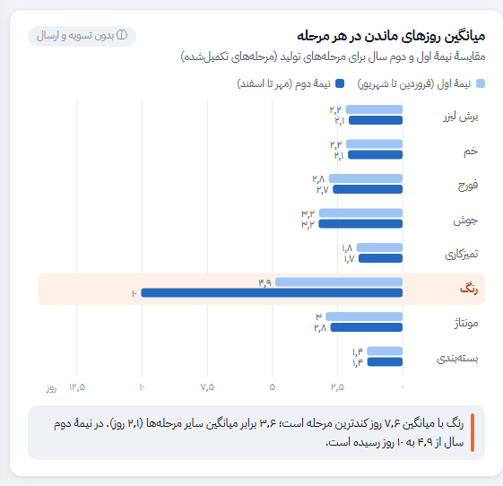
برای هر مرحلهٔ تولیدی، میانگین تعداد روزهایی که سفارشها در آن ماندند (از ورود تا خروج) نشان داده شده است. هر مرحله دو میله دارد تا ببینید وضعیت در نیمهٔ دوم سال بهتر شده یا بدتر. مرحلهای که بیشترین میانگین را دارد «گلوگاه» نام گرفته است. تسویه و ارسال در این نمودار نیامدهاند، چون زمانشان به پرداخت مشتری و حملونقل بستگی دارد نه ظرفیت کارگاه.
روند تحویل بهموقع مشاهده در داشبورد ←
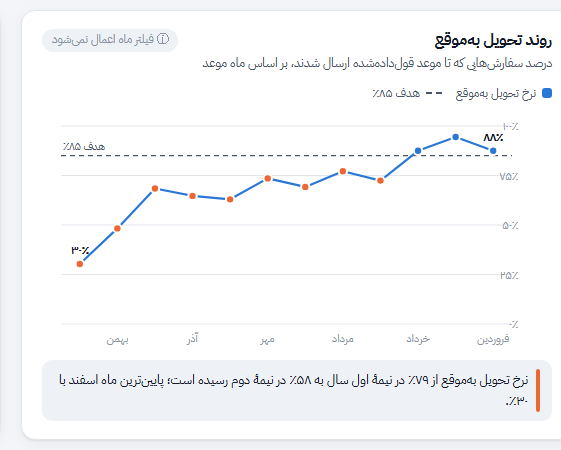
برای هر ماه، سفارشهایی که موعد تحویلشان در آن ماه بوده در نظر گرفته میشوند و درصدی که تا آن موعد ارسال شدهاند روی خط نشان داده میشود. ماهها از راست به چپاند. چون محور این نمودار «ماه موعد» است و نه «ماه ثبت»، فیلتر ماه روی آن اعمال نمیشود.
توزیع زمان تحویل مشاهده در داشبورد ←
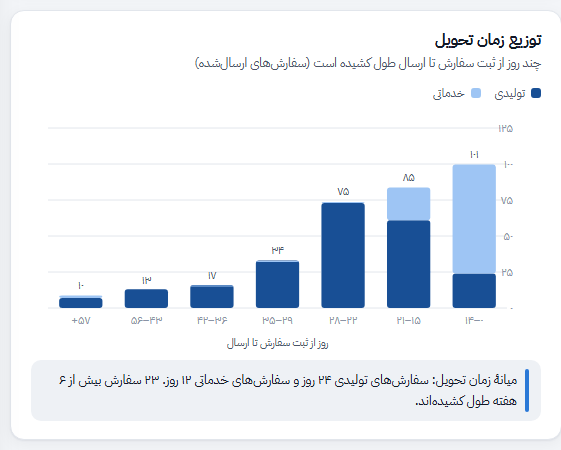
برای سفارشهای ارسالشده، تعداد روزهای بین ثبت سفارش و ارسال حساب شده و سفارشها در بازههای زمانی دستهبندی شدهاند. بخش تیرهٔ هر ستون سفارشهای تولیدی و بخش روشن سفارشهای خدماتی است. هرچه ستونها به سمت چپ کشیدهتر باشند، مشتری مدت بیشتری منتظر مانده است.
وضعیت پرداخت و مجوزهای استثنا مشاهده در داشبورد ←
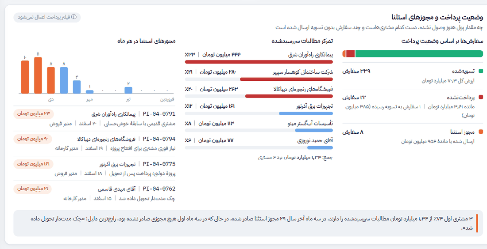
چه چیزی را نشان میدهد؟
- وضعیت پرداخت: نوار رنگی سهم سفارشهای تسویهشده، پرداختنشده و مجوز استثنا را نشان میدهد و زیر آن تعداد و مبلغ هر گروه آمده است.
- تمرکز مطالبات سررسیدشده: مشتریهایی که بیشترین طلب سررسیدشده را دارند، با مبلغ و سهم هر کدام. سه مشتری اول قرمز هستند.
- مجوزهای استثنا: تعداد مجوزهای صادرشده در هر ماه (سه ماه آخر سال نارنجی) و آخرین مجوزها همراه با دلیل، تاریخ و تأییدکننده.
از مطالبهٔ سررسیدشده، نزد سه مشتری است و بیشترین سهم را با دارد.
در دی تا اسفند مجوز استثنا صادر شده، در حالی که در فروردین تا خرداد مجوز صادر شده بود. رایجترین دلیل: «».
فیلتر «وضعیت پرداخت» روی این بخش اعمال نمیشود تا همیشه تصویر کامل پرداختها را ببینید؛ نمودار ماهانهٔ مجوزها هم همیشه کل سال را نشان میدهد.
فهرست سفارشها و پنل جزئیات مشاهده در داشبورد ←
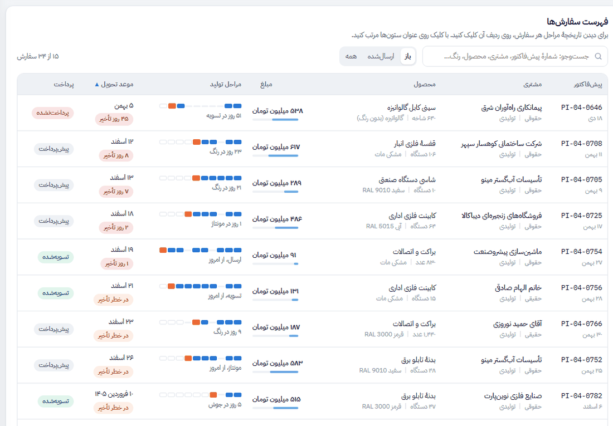
چطور بخوانیم؟
نوار مراحل: ده خانهٔ کوچک، به ترتیب از راست (برش لیزر) تا چپ (ارسال):
آبی = مرحلهٔ انجامشده، نارنجی = مرحلهٔ فعلی، خانهٔ خالی = مرحلهٔ باقیمانده، خط کمرنگ = مرحلهای که این سفارش لازم ندارد.- موعد تحویل: در مسیر در خطر تأخیر ۸ روز تأخیر بهموقع ارسال شد
- پرداخت: تسویهشده پیشپرداخت (هنوز به تسویه نرسیده) پرداختنشده (به تسویه رسیده ولی پول نیامده) مجوز استثنا
با کلیک روی عنوان هر ستون جدول مرتب میشود (کلیک دوباره ترتیب را برعکس میکند). ترتیب پیشفرض «فوریت موعد» است: اول سفارشهای دیرکرده، بعد سفارشهای در خطر. در کادر جستوجو میتوانید شمارهٔ پیشفاکتور، نام مشتری، محصول، رنگ یا نام مرحله را بنویسید. دکمههای «باز / ارسالشده / همه» دامنهٔ جدول را تعیین میکنند. در گوشی، جدول به شکل کارت نمایش داده میشود و مرتبسازی از فهرست بالای آن انجام میشود.
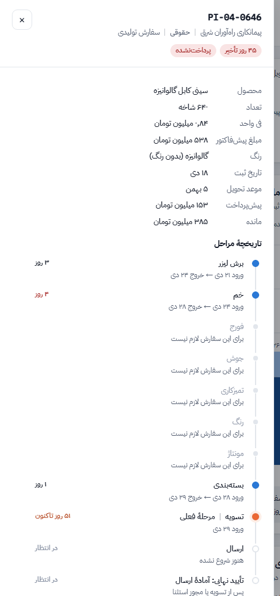
فیلترها مشاهده در داشبورد ←
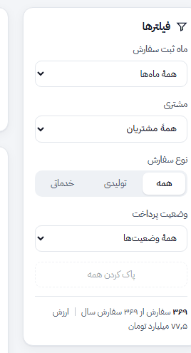
- ماه ثبت سفارش: فقط سفارشهایی که در آن ماه ثبت شدهاند.
- مشتری: یک مشتری مشخص، یا همهٔ مشتریان حقیقی یا همهٔ مشتریان حقوقی.
- نوع سفارش: تولیدی (ساخت محصول کامل) یا خدماتی (انجام یک یا چند مرحله روی جنس مشتری).
- وضعیت پرداخت: تسویهشده، پرداختنشده یا مجوز استثنا.
دکمهٔ «پاک کردن همه» همهٔ فیلترها را برمیدارد. فیلترهای انتخابی در نشانی صفحه ذخیره میشوند، پس میتوانید نشانی را برای همکارتان بفرستید تا دقیقاً همین نما را ببیند.
| بخش داشبورد | ماه ثبت | مشتری | نوع سفارش | وضعیت پرداخت |
|---|---|---|---|---|
| شاخصهای اصلی | ✓ | ✓ | ✓ | ✓ |
| یافتههای مهم | ✓ | ✓ | ✓ | ✓ |
| حجم سفارش ماهانه | فقط برجستهسازی | ✓ | ✓ | ✓ |
| سفارشهای باز در هر مرحله | ✓ | ✓ | ✓ | ✓ |
| روزهای ماندن در هر مرحله | ✓ | ✓ | ✓ | ✓ |
| روند تحویل بهموقع | ✗ | ✓ | ✓ | ✓ |
| توزیع زمان تحویل | ✓ | ✓ | ✓ | ✓ |
| وضعیت پرداخت و تمرکز مطالبات | ✓ | ✓ | ✓ | ✗ |
| نمودار ماهانهٔ مجوزهای استثنا | ✗ | ✓ | ✓ | ✗ |
| فهرست سفارشها | ✓ | ✓ | ✓ | ✓ |
پرسشهای رایج
«عقب از موعد» با «در خطر تأخیر» چه فرقی دارد؟
«عقب از موعد» یعنی تاریخ موعد گذشته و سفارش هنوز ارسال نشده است. «در خطر تأخیر» یعنی موعد هنوز نرسیده، ولی اگر مراحل باقیمانده با سرعت معمول انجام شوند، سفارش بعد از موعد آماده میشود. سفارشهای در خطر بهترین فرصت برای جلوگیری از تأخیرند.
«مطالبات سررسیدشده» با کل ماندهٔ سفارشها چه فرقی دارد؟
مشتری معمولاً بخشی از مبلغ را هنگام ثبت سفارش میپردازد و بقیه را پیش از ارسال. ماندهٔ سفارشهایی که هنوز در تولیدند طبیعی است و سررسید نشده. «مطالبات سررسیدشده» فقط ماندهٔ سفارشهایی را میشمارد که به مرحلهٔ تسویه رسیدهاند یا با مجوز استثنا ارسال شدهاند؛ یعنی پولی که باید تا الان وصول میشد.
مقایسهٔ «نسبت به ۳۰ روز پیش» چطور حساب میشود؟
همین شاخص برای ۳۰ روز پیش (۲۰ بهمن) و با همین فیلترها دوباره حساب میشود و اختلاف دو عدد نمایش داده میشود. برای مجوزهای استثنا، عدد مقایسه تعداد مجوزهای صادرشده در ۳۰ روز اخیر است.
گلوگاه چطور تعیین میشود و چرا تسویه در آن حساب نمیشود؟
از میان هشت مرحلهٔ تولیدی، مرحلهای که میانگین روزهای ماندن در آن بیشتر است گلوگاه نامیده میشود. زمان تسویه به پرداخت مشتری و زمان ارسال به حملونقل وابسته است و با افزایش نیرو یا دستگاه در کارگاه کوتاه نمیشود، برای همین جداگانه در بخش پرداخت بررسی میشود.
چرا روند تحویل بهموقع با فیلتر ماه تغییر نمیکند؟
محور این نمودار ماه موعد تحویل است، نه ماه ثبت سفارش. اگر فیلتر ماه ثبت روی آن اعمال میشد، روند سال از هم میپاشید و نمیشد ماهها را با هم مقایسه کرد.
دادههای داشبورد از کجا میآیند؟
دادهها از فهرست پیشفاکتورها، ثبت ورود و خروج هر ایستگاه کاری و دفتر دریافتها خوانده میشوند و داشبورد بهطور خودکار بهروز میشود.
واژهنامه
- پیشفاکتور
- سندی که پیش از شروع کار برای مشتری صادر میشود و شمارهٔ آن (مثل PI-04-0646) شناسهٔ سفارش در کل داشبورد است.
- سفارش تولیدی
- ساخت کامل یک محصول، مثل قفسه، درب یا بدنهٔ تابلو برق، که معمولاً بیشتر مراحل را طی میکند.
- سفارش خدماتی
- انجام یک یا چند مرحله روی جنس خود مشتری، مثل برش لیزر ورق یا رنگ پودری قطعات.
- مرحلهٔ فعلی
- مرحلهای که سفارش در تاریخ گزارش در آن قرار دارد.
- گلوگاه
- کندترین مرحلهٔ تولید که سرعت کل کارگاه را تعیین میکند.
- موعد تحویل
- تاریخی که هنگام ثبت سفارش به مشتری قول داده شده است.
- تسویه
- مرحلهٔ دریافت ماندهٔ پول پیش از ارسال.
- مجوز استثنا
- تأیید مدیر برای ارسال سفارش بدون تسویهٔ کامل، همراه با ثبت دلیل.
- آمادهٔ ارسال
- تأیید نهایی پس از تسویه یا مجوز استثنا؛ سفارش فقط منتظر حمل است.
- مطالبات سررسیدشده
- ماندهٔ پول سفارشهایی که به تسویه رسیدهاند یا با مجوز استثنا ارسال شدهاند.
- زمان تحویل
- تعداد روزهای بین ثبت سفارش و ارسال آن.
- میانه
- عدد وسط وقتی همهٔ مقدارها مرتب شوند؛ برخلاف میانگین، چند سفارش بسیار طولانی آن را بالا نمیبرد.